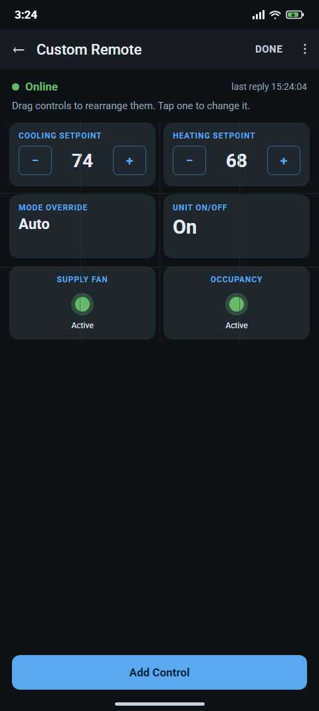
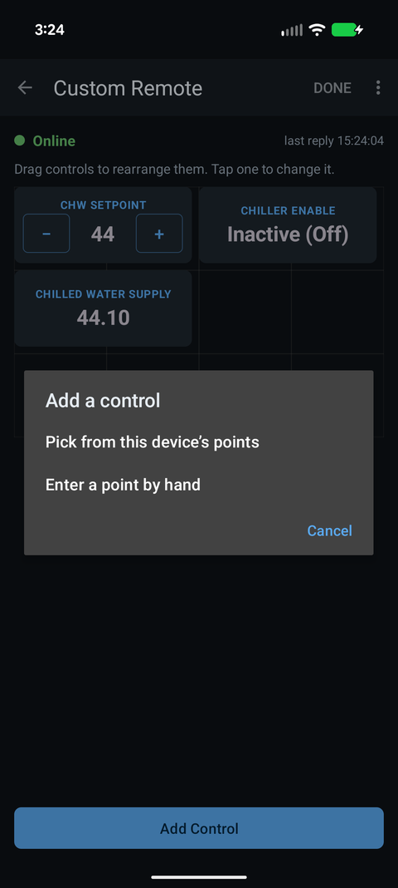
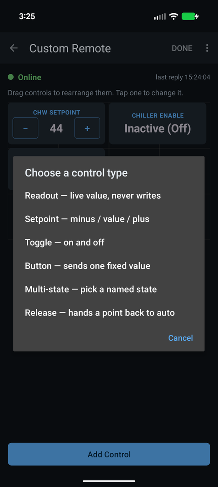
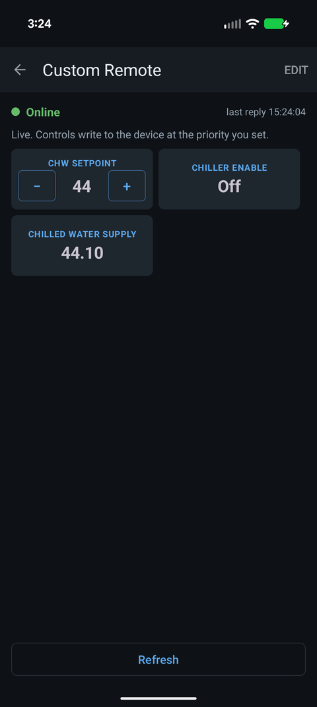

How do I build a custom remote for a BACnet IP device in Easy BACnet?
Updated 18 September 2026
Open a device from your scan results, tap the menu and choose Custom Remote, then tap Edit and Add Control. Pick a point from the device's list (or type one in by hand), choose what kind of control it should be — a readout, a setpoint with minus and plus, an on/off toggle, a button, a multi-state picker, or a release button — and it appears on a grid. Drag controls to arrange them, tap one to rename or recolour it, then tap Done. Saved remotes live under My Remotes on the home screen. On the free version you can keep one remote, and opening it plays one short video ad; the one-time unlock removes the ad and lets you build as many as you like.




What a custom remote is for
The point list shows everything a controller has — eighty rows on a typical rooftop unit. A custom remote is the six of those you actually touch, laid out as big buttons on one screen: the zone setpoint, the fan, the mode, the supply temperature. You build it once per device and it is there every visit.
Step 1 — Open the device's remote
Scan, tap View Results, tap the device. In the menu (three dots) tap Custom Remote. You can also reach your saved remotes from the Custom Remotes card on the opening screen, or the My Remotes button once you have built one.
Step 2 — Add controls
Tap Edit in the top bar, then Add Control. You get two ways to choose the point:
- Pick from this device's points — the list the app already read. Easiest.
- Enter a point by hand — type an object type and instance number. For a point you know exists but that did not show up, or for a device with a huge object list you did not wait for.
Then choose what kind of control it should be:
| Control | What it does | Use it for |
|---|---|---|
| Readout | Shows the live value. Never writes. | Supply temperature, status, anything you just want to see. |
| Setpoint | Minus, value, plus. Tap the value to type one. | Zone setpoint, damper minimum, anything analog you adjust. |
| Toggle | Tap to flip on/off. | Fan enable, occupancy override. |
| Button | Sends one fixed value when tapped. | A reset, a "go to 100%". |
| Multi-state | Tap to pick from named states. | Fan speed Off/Low/High, operating mode. |
| Release | Hands the point back to automatic. | Put one next to every control that writes. |
Step 3 — Arrange it
Controls sit on a four-column grid. In Edit mode, drag a control to move it; it snaps to the grid and refuses to land on top of another. Tap a control to change it: rename it, make it wider, set the write priority it uses, change the step size on a setpoint, name the states on a multi-state, pick a colour and card style, or delete it.
Colour is a safety feature, not decoration. Make the control that stops a fan red and the ones that only display temperatures plain. On a ladder, with gloves on, that is the difference you will actually see.
Tap Done when it looks right. Nothing talks to the device while you are in Edit mode; arranging a layout cannot command anything.
Using it
Out of Edit mode the remote is live. The line at the top tells you the truth about the connection: a green Online with the time of the last reply, or a red No response from device — and when the device stops answering, the numbers on the controls grey out rather than sitting there looking current. Tap Refresh for a fresh read of everything.
Controls that write need Write mode on, exactly as the point screen does — see how to write to a BACnet point. Until it is on, the remote is read-only and says so.
Coming back to it
Saved remotes appear under My Remotes on the home screen, one per device, with the device name, how many controls it has, and how long it has left. Open one and it talks to the controller directly at its last known address — no scan needed. If the controller has moved to a new IP, the remote says it is unreachable and a scan puts it right.
Free vs unlocked
Everything else in Easy BACnet is free with nothing held back. Custom remotes are the one paid feature, handled gently: on the free version you can keep one saved remote, and opening it plays one short video ad. If no ad can load — common in a plant room with no signal — the remote just opens anyway, so you are never locked out of your own controls.
A single one-time purchase removes the ads and lifts the limit: build as many remotes as you like, on as many devices as you look after, and open them with no ad. Remotes never expire either way. There is no subscription.